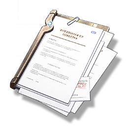

"Archive: Tacet Discord"
Missions

Open the information interface after use
The archives stored in the Huaxu Academy, Jinzhou Campus, record the research information related to "Tacet Discord".
"The information energy body composed of Reverberation, has a mimicry of life activities, and its core behavior goal is to devour and absorb the frequency it needs."